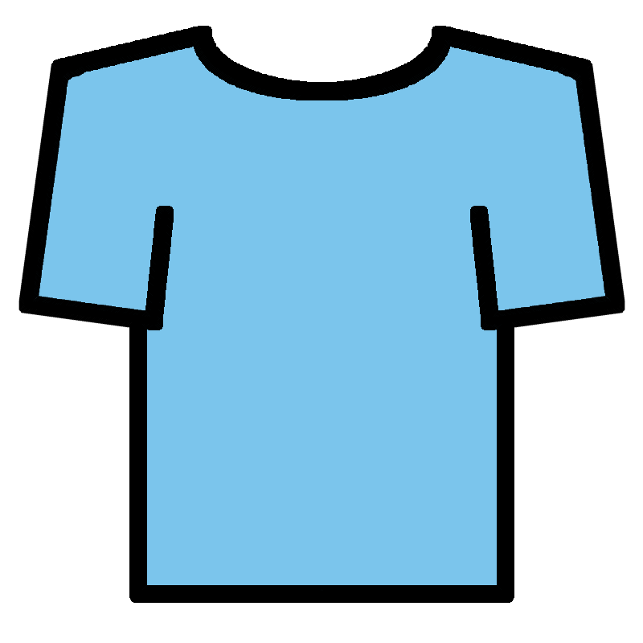

<div class="container" fxLayout="row" fxFlex="100" fxLayout.xs="column" fxLayoutGap="25px" fxLayoutAlign="center">
  <div fxFlex="50">
      <md-card>
        <sq-avatar></sq-avatar>
        <button  md-icon-button [routerLink]="['edit-avatar']">
          
        </button>
      </md-card>

  </div>
  <div fxFlex="50">
    <sq-button-grid-card title="Cursor" patchValue="cursor" [options]="cursorService.getCursors()" (buttonClicked)="changeCursor($event)"></sq-button-grid-card>
    <sq-button-grid-card title="Cursor Follower" patchValue="cursorFollower" [options]="cursorFollowerService.getCursorFollowers()" (buttonClicked)="changeCursorFollower($event)"></sq-button-grid-card>
  </div>
</div>

